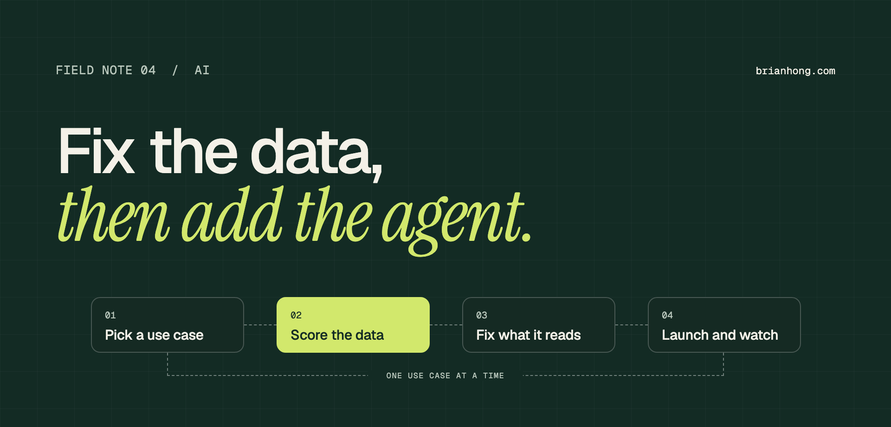

Salesforce data readiness for AI: what to fix before you turn on Agentforce
An agent is only as good as the records, articles, and permissions behind it. Pick one use case, score the data it reads, and fix that before you launch.

The pattern is familiar by now. An AI agent looks great in the demo org, where every account has an industry and every case has a clean history. Then it meets production data, and it summarizes the wrong contact, quotes a return policy from 2021, or tells a customer it can’t find their order.
The model didn’t get worse between the demo and production. The data did. A stalled AI pilot is very often a data problem that nobody had a reason to fix until an agent started reading the records out loud.
Data readiness for AI is the degree to which the data an AI system reads is complete, accurate, unique, current, described, and correctly permissioned for a specific job. In Salesforce, that means the records, Knowledge articles, metadata, and access an Agentforce agent uses to answer a question or take an action.
What data readiness for AI means
AI-ready data is data that is fit for one specific use case. It is not a property of the whole org, and it is not the same as “clean data.”
That distinction matters because it changes the size of the job. Nobody has ever finished cleaning an entire Salesforce org. But an agent that answers order status questions reads maybe twenty fields across three objects and a few dozen articles. Those can be made ready in weeks.
Gartner makes the same point about scale: the requirements for AI-ready data are different from traditional data management, and teams that miss the difference put their projects at risk. In a Gartner survey of 248 data management leaders, 63% of organizations either didn’t have or weren’t sure they had the right data management practices for AI. Gartner also predicts that through 2026, organizations will abandon 60% of AI projects that aren’t supported by AI-ready data.
Why AI exposes what reports hid
Reports and dashboards tolerate bad data because a person sits between the data and the decision. An agent removes that person.
A sales manager who sees a blank Industry field shrugs and moves on. A rep who finds two accounts for the same company knows which one is real. An agent does neither. It reads whatever it is given, treats it as true, and answers in a confident sentence.
- Gaps become wrong answers A report shows a blank as a blank. An agent asked about a record with missing fields either says it doesn’t know or fills the gap from whatever else it can find.
- Duplicates become coin flips With two records for one customer, the agent picks one. The case history is on the other.
- Old content sounds current A five-year-old article and last month’s article look the same to a retriever. The agent quotes whichever matches the question best.
- Access becomes disclosure A field that was technically visible but that nobody opened is now one question away from being read back to a customer.
None of these are AI problems. They’re the same data quality issues the org has always had, with the human safety net taken away.
The six traits of AI-ready data
AI-ready data has six traits. The first four are classic data quality. The last two are what AI adds.
- Complete The fields the agent reads are filled in on the records it will touch. Measure fill rate on those fields only.
- Accurate The values are true. Check a sample of records against the source: the contract, the invoice, the customer.
- Unique One record per real-world customer, contact, or product. Duplicates split history across records.
- Current Records and articles reflect how things are today. Old content is archived, not left in place.
- Described Objects, fields, and picklist values have labels and descriptions that say what they mean. The model reads them.
- Permissioned The agent can see what it needs for the job and nothing else.
“An agent can’t skip a bad record. It reads it out loud.”
Structured data: fields, duplicates, and descriptions
Start with the fields the agent actually reads. For each one, check how often it’s filled, whether it’s right, and whether a stranger could tell what it means.
Fill rate is the easy one. An aggregate query gives you totals for a whole object in one call:
Duplicates come next. Turn on matching rules and duplicate rules for accounts, contacts, and leads if they aren’t on already, run duplicate record set reports to see the backlog, and merge the records the agent will touch first. Blocking new duplicates matters more than clearing every old one.
Then read your metadata the way a model would. Salesforce’s admin team puts it plainly: without metadata, the model can’t understand any of your customizations. Agents map what a user asks for to fields by reading labels and descriptions. Three fixes pay off quickly:
- Labels people can read Rename fields like “Acct Stat 2” to what they mean. Keep the API name, change the label.
- Descriptions on key fields One or two sentences: what the field holds, who sets it, and what the valid values mean. Custom fields and picklists first.
- Picklist values without codes Replace legacy abbreviations with explicit names, and retire values nobody has used in a year.
This is the cheapest work in the whole project, and it helps the next admin as much as it helps the agent. If nobody owns these fields yet, sort that out first. I wrote about how in Salesforce data stewardship is a people problem first.
Unstructured data: knowledge, files, and notes
For a service agent, Knowledge articles matter more than fields. Most customer questions are answered from content, not from a record.
In Agentforce, that content reaches the agent through an Agentforce Data Library, which indexes Knowledge articles and uploaded files and retrieves the passages that best match the question. Retrieval finds the closest match. It doesn’t know which article is still true. That part is on you.
- One answer per question Two articles that disagree about the refund window produce an agent that disagrees with itself. Merge them and archive the loser.
- Archive, don’t ignore Outdated articles left published are still in the index. Unpublish anything that describes a product, price, or policy you no longer have.
- Write for retrieval Short articles with one topic each and a title phrased the way a customer asks. A forty-page PDF buries the one paragraph that matters.
- Give every article an owner A named person and a review date. Unowned articles are the ones that go stale.
- Watch what’s in the files Uploaded documents and case notes can carry personal data, pricing exceptions, and internal comments. Review them before you index them.
A quick way to find the stale pile is to count published articles that haven’t been touched in a year:
Permissions: what the agent is allowed to see
An agent can only use data it has access to, and it can repeat anything it has access to. Permissions are part of data readiness, not a separate security task.
How access works depends on the type of agent. An employee-facing agent runs as the logged-in user, so it respects that person’s permission sets, field-level security, and sharing. A customer-facing service agent runs as a dedicated agent user, and that user record decides what the agent can read and edit.
Salesforce’s own guidance describes both ways this goes wrong. If the agent doesn’t have permission to view the data, it can’t answer questions about it. If it has access to data it doesn’t need, it can expose that information to customers. So the target is least privilege:
- List what the job needs Write down the objects and fields the use case requires before you grant anything. Grant those, read-only where possible.
- Use permission sets Give the agent user its own permission set for each use case. It’s easier to review than a profile.
- Check field-level security Object access isn’t enough. Look for sensitive fields on the same objects: margins, internal notes, personal data.
- Test as the agent Ask it questions it shouldn’t be able to answer. If it answers, fix the access, not the prompt.
For employee agents, the uncomfortable finding is usually that people already have more access than they need. An agent makes old over-sharing visible, because it will go and find the record nobody thought to look for.
Score readiness one use case at a time
Measure readiness per use case, with one row for each of the six traits. A scorecard turns “is our data ready?” into a question someone can answer with numbers.
| Trait | How to measure | Starting bar |
|---|---|---|
| Complete | Fill rate on each field the agent reads | 95% or higher |
| Accurate | Sample 50 records against the source | No more than 2 or 3 wrong |
| Unique | Duplicate record sets on the objects in scope | Under 2%, new ones blocked |
| Current | Records and articles untouched in 12 months | Reviewed or archived |
| Described | Fields in scope with a clear label and description | All of them |
| Permissioned | Agent access compared with the list of needs | Exact match |
The bars are starting points, not standards. The business owner of the use case sets the real ones, because they know what a wrong answer costs. An agent drafting internal call notes can live with more gaps than one telling customers what they owe.
Score before you build, and write the numbers down. The gap between today’s score and the bar is your project plan. It’s also the before-and-after story you’ll want when someone asks whether the cleanup was worth it.
Start with one use case
Pick one job for the agent and make only that job’s data ready. This is the step that keeps the project from turning into an org-wide cleanup that never ends.
- Name the job One sentence: “Answer order status questions for logged-in customers.” If it takes a paragraph, it’s more than one use case.
- List what it reads The objects, the ten to twenty fields, and the articles. That list is the scope of the data work.
- Score it Run the scorecard on that list and nothing else.
- Fix the gaps Backfill, merge, describe, archive, and tighten access until each row meets its bar.
- Keep it ready Add validation, duplicate rules, and an owner so the data doesn’t slide back after launch.
On the platform side, Salesforce says Data 360, formerly Data Cloud, must be provisioned and enabled for all Agentforce use. That’s a setup step. It doesn’t mean you have to unify every data source before your first agent. Agents can also be grounded through flows, Apex, prompt templates, and MuleSoft APIs, so a first use case can run on the CRM data you already have.
The second use case goes faster, because some of its fields were already fixed for the first one. After three or four, the most-used parts of the org are in good shape, and you got there by shipping things.
A 30-60-90 day plan
- Days 1–30: Assess Pick the use case and its business owner. List the objects, fields, and articles it reads. Run the scorecard and agree the bar for each row.
- Days 31–60: Fix Backfill and correct the fields in scope. Merge duplicates and turn on duplicate rules. Add labels and descriptions. Archive stale articles. Build the agent’s permission set.
- Days 61–90: Launch Test the agent against real records, including questions it should refuse. Go live with a small group. Review its answers weekly and feed misses back into the data.
- After day 90: Keep it Re-run the scorecard monthly. Hand the weekly review to the data steward. Pick the next use case.
The weekly review is what keeps this from being a one-time cleanup. Every wrong answer the agent gives points at a specific field, article, or permission. Fix that, and the next answer is better. If you run changes through a Center of Excellence, agent misses are just another intake source.
Data readiness for AI isn’t a new discipline. It’s the data quality, documentation, and access work most orgs have put off for years, with a deadline attached. The good news is that the scope is finally small enough to finish: one use case, a short list of fields, and a score you can show.
Frequently asked questions
What is data readiness for AI?
Data readiness for AI is the degree to which the data an AI system reads is complete, accurate, unique, current, described, and correctly permissioned for a specific use case. It is measured per use case, not across the whole org.
How clean does Salesforce data need to be for Agentforce?
Clean enough that you would trust a new hire to act on it without checking. That standard applies only to the objects, fields, and articles the agent actually reads for its job, which is usually a few dozen fields and not the whole org.
Do I need Data Cloud to use Agentforce?
Yes, in the sense that it has to be turned on. Salesforce’s documentation says Data 360, formerly Data Cloud, must be provisioned and enabled for all Agentforce use, and that the Agentforce Data Library and Einstein Trust Layer don’t work without it. That is different from running a full data unification project before you start.
Who owns AI data readiness?
The business owner of each object owns the quality of its data, and a data steward does the weekly work. The Salesforce admin owns the tooling, the metadata, and the agent’s permissions. Nobody owns it by default, so name the people.
How long does it take to get Salesforce data ready for AI?
For one well-scoped use case, plan on about 90 days: a month to score the data, a month to fix it, and a month to test and launch. Trying to make the whole org ready at once takes far longer and usually stalls.
How do you measure data readiness for AI?
Score six things for each use case: fill rate on the fields the agent reads, accuracy on a sample of records, duplicate rate, age of records and articles, share of fields with a description, and whether the agent’s access matches what it needs.